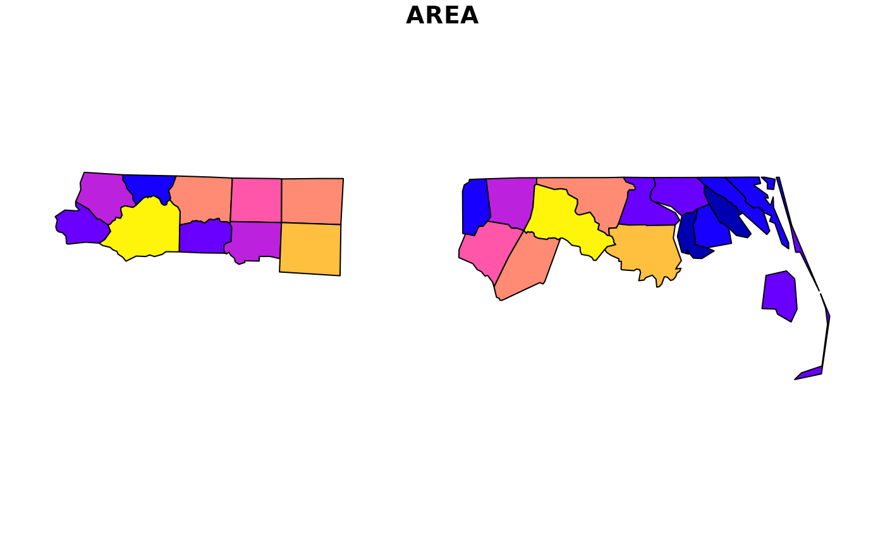
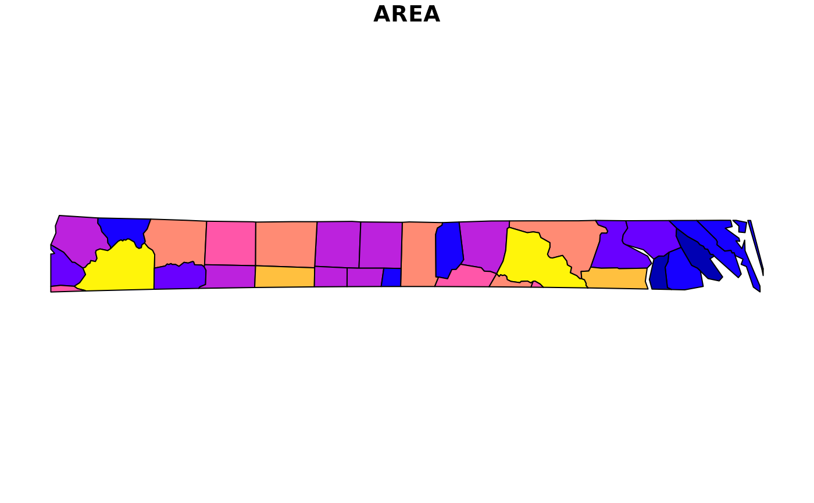
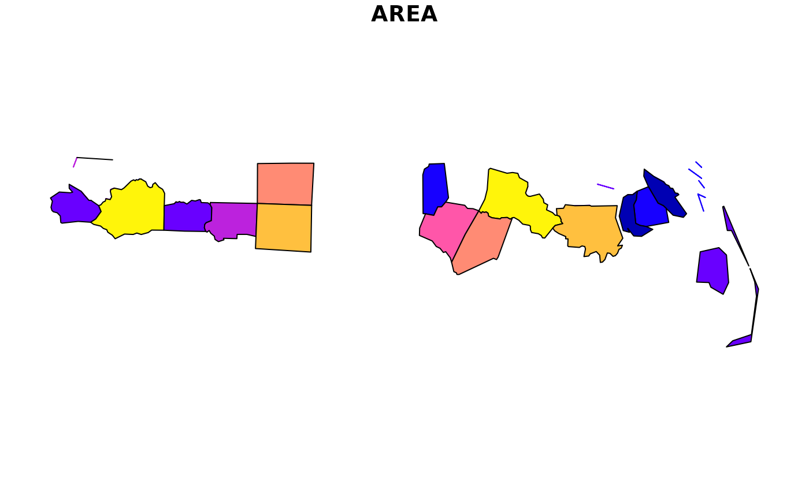
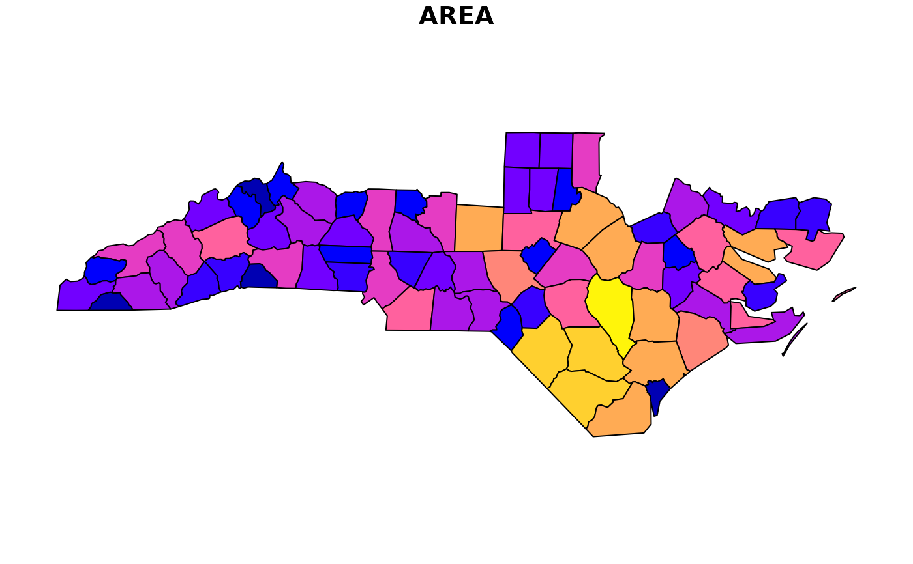

Filter, crop, trim, or erase a simple feature object or list
Source:R/st_filter_ext.R
st_filter_ext.RdExtend sf::st_filter() to filter a sf list or a sf, sfc, or bbox with
options to crop, trim or erase the geometry of the input object based on a
predicate function. Returns x transformed to match crs if y is NULL.
Usage
st_filter_ext(
x,
y = NULL,
crop = FALSE,
trim = FALSE,
erase = FALSE,
crs = NULL,
.predicate = sf::st_intersects,
type = NULL,
allow_list = TRUE,
...
)
st_filter_geom_type(x, type = NULL)Arguments
- x, y
A
sf,sfc, orbboxobject. x may also be asflist objects. If x is ansflist, additional parameters in...will be ignored.- crop
If
TRUE, x is cropped to y usingsf::st_crop().- trim
If
TRUE, x is trimmed to y withst_trim().- erase
If
TRUE, x is erased by y withst_erase().- crs
Coordinate reference system to return.
- .predicate
geometry predicate function with the same profile as
sf::st_intersects(); see details forsf::st_filter()for more options.- type
Geometry type.
- allow_list
If
TRUE, x can be a list ofsf,sfc, orbboxobjects. IfFALSE, onlysf,sfc, orbboxobjects are supported. Defaults toTRUE.- ...
Arguments passed on to
sf::st_filter
Examples
nc <- sf::read_sf(system.file("shape/nc.shp", package = "sf"))
plot(
st_filter_ext(
nc,
nc[c(1:10), ]
),
max.plot = 1
)

plot(
st_filter_ext(
nc,
nc[c(1:10), ],
crop = TRUE
),
max.plot = 1
)

plot(
st_filter_ext(
nc,
nc[c(1:10), ],
erase = TRUE
),
max.plot = 1
)

plot(
st_filter_ext(
nc,
sf::st_union(nc[c(1:10), ]),
.predicate = sf::st_disjoint
),
max.plot = 1
)

st_filter_geom_type(nc, "POINT")
#> Simple feature collection with 0 features and 14 fields
#> Bounding box: xmin: NA ymin: NA xmax: NA ymax: NA
#> Geodetic CRS: NAD27
#> # A tibble: 0 × 15
#> # ℹ 15 variables: AREA <dbl>, PERIMETER <dbl>, CNTY_ <dbl>, CNTY_ID <dbl>,
#> # NAME <chr>, FIPS <chr>, FIPSNO <dbl>, CRESS_ID <int>, BIR74 <dbl>,
#> # SID74 <dbl>, NWBIR74 <dbl>, BIR79 <dbl>, SID79 <dbl>, NWBIR79 <dbl>,
#> # geometry <GEOMETRY [°]>
st_filter_geom_type(nc, "MULTIPOLYGON")
#> Simple feature collection with 100 features and 14 fields
#> Geometry type: MULTIPOLYGON
#> Dimension: XY
#> Bounding box: xmin: -84.32385 ymin: 33.88199 xmax: -75.45698 ymax: 36.58965
#> Geodetic CRS: NAD27
#> # A tibble: 100 × 15
#> AREA PERIMETER CNTY_ CNTY_ID NAME FIPS FIPSNO CRESS_ID BIR74 SID74 NWBIR74
#> <dbl> <dbl> <dbl> <dbl> <chr> <chr> <dbl> <int> <dbl> <dbl> <dbl>
#> 1 0.114 1.44 1825 1825 Ashe 37009 37009 5 1091 1 10
#> 2 0.061 1.23 1827 1827 Alle… 37005 37005 3 487 0 10
#> 3 0.143 1.63 1828 1828 Surry 37171 37171 86 3188 5 208
#> 4 0.07 2.97 1831 1831 Curr… 37053 37053 27 508 1 123
#> 5 0.153 2.21 1832 1832 Nort… 37131 37131 66 1421 9 1066
#> 6 0.097 1.67 1833 1833 Hert… 37091 37091 46 1452 7 954
#> 7 0.062 1.55 1834 1834 Camd… 37029 37029 15 286 0 115
#> 8 0.091 1.28 1835 1835 Gates 37073 37073 37 420 0 254
#> 9 0.118 1.42 1836 1836 Warr… 37185 37185 93 968 4 748
#> 10 0.124 1.43 1837 1837 Stok… 37169 37169 85 1612 1 160
#> # ℹ 90 more rows
#> # ℹ 4 more variables: BIR79 <dbl>, SID79 <dbl>, NWBIR79 <dbl>,
#> # geometry <MULTIPOLYGON [°]>